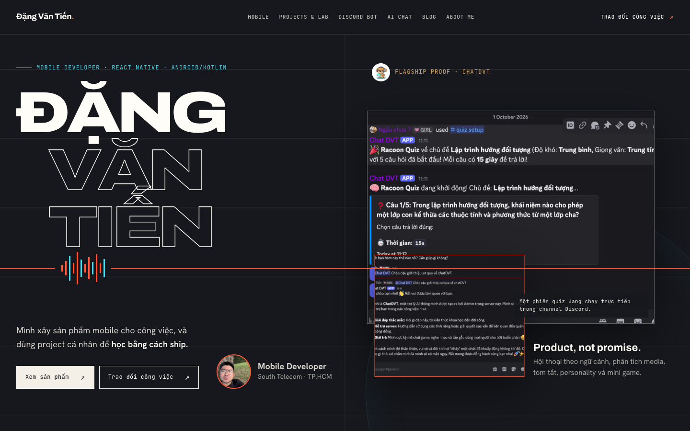
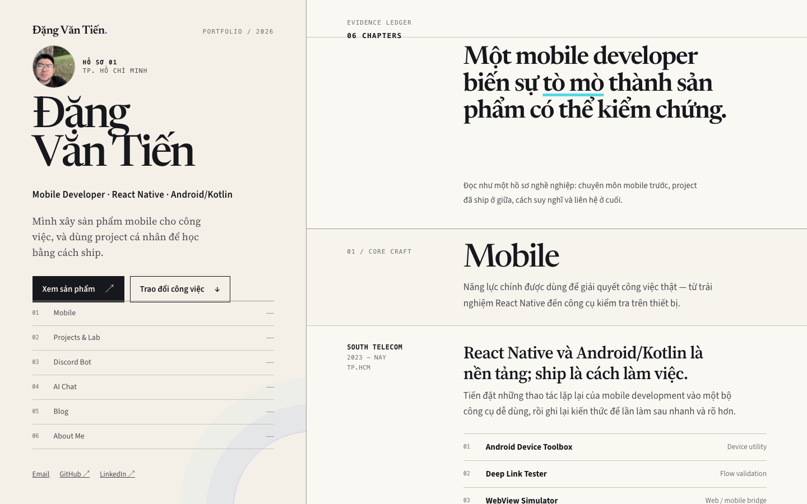
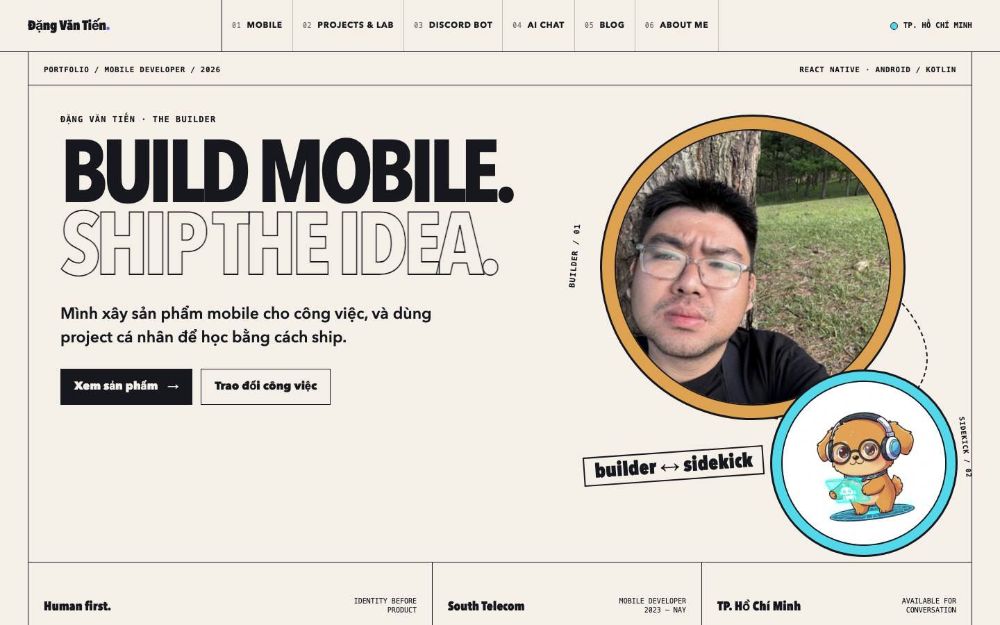

Đậm chất kỹ thuật
Nền tối, tên lớn và ảnh ChatDVT hoạt động ngay ở màn hình đầu. Tín hiệu hội thoại nối người tạo với sản phẩm.

Huashu: hướng #8 trong thư viện web, diễn giải thành tín hiệu hội thoại.
Đặng Văn Tiến là thương hiệu chính. ChatDVT là sản phẩm tiêu biểu chứng minh khả năng xây và vận hành sản phẩm. Ba bản dùng chung nội dung và hình ảnh thật, dành cho recruiter.
Phạm vi: Homepage cùng định hướng cho Mobile, Projects & Lab, Discord Bot, AI Chat, Blog và About Me. Đây là prototype để chọn thiết kế; các feature bên trong chưa được triển khai lại.
Nền tối, tên lớn và ảnh ChatDVT hoạt động ngay ở màn hình đầu. Tín hiệu hội thoại nối người tạo với sản phẩm.

Huashu: hướng #8 trong thư viện web, diễn giải thành tín hiệu hội thoại.
Thông tin Tiến ở cột trái; chuyên môn, project và ảnh sản phẩm ở cột phải. Nhịp đọc rõ, giúp recruiter kiểm tra từng lớp bằng chứng.

Tham chiếu cách tổ chức thông tin: Brittany Chiang.
Chân dung Tiến và avatar ChatDVT thành cặp nhận diện. Màu vàng cam và cyan lấy từ mascot, bố cục như một ấn phẩm cá nhân.

Tham chiếu tư duy xây hệ nhận diện: COLLINS.